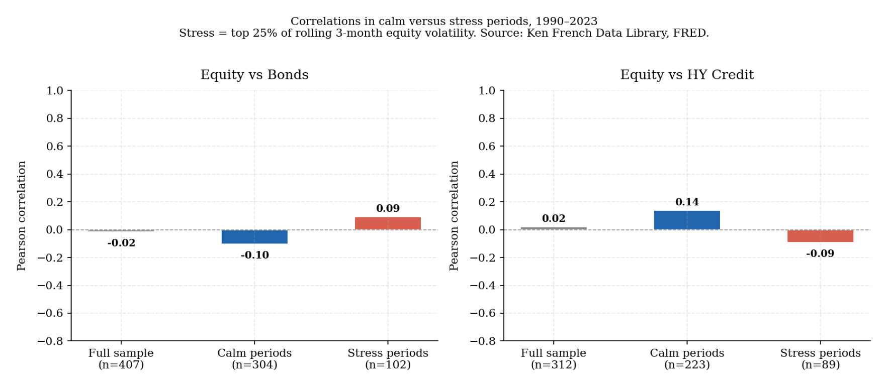
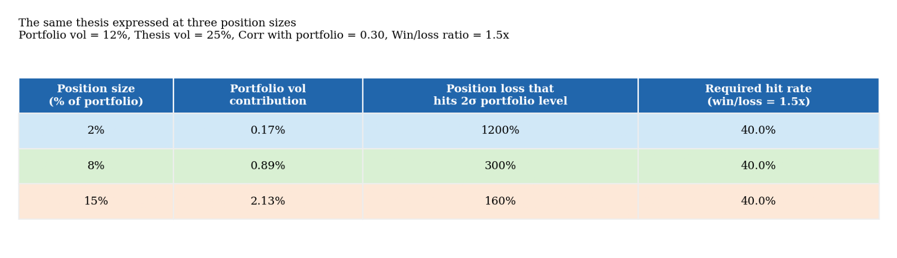
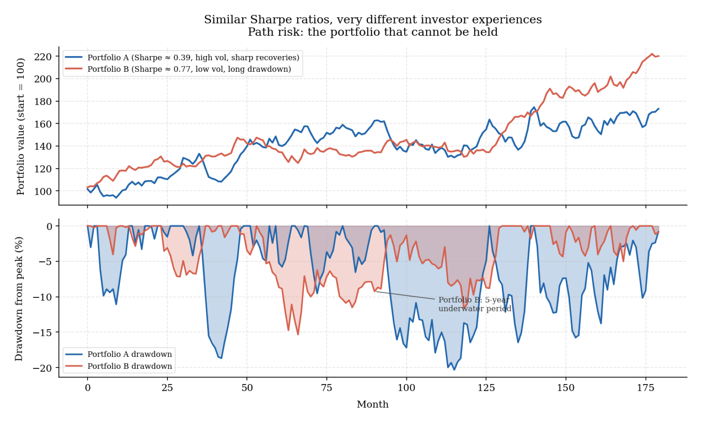
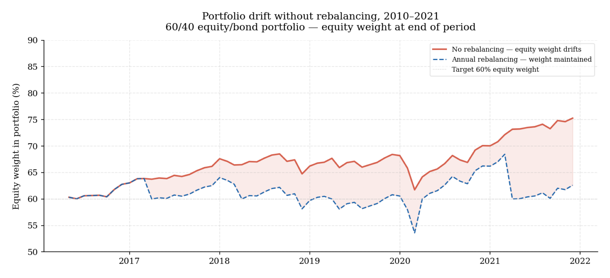
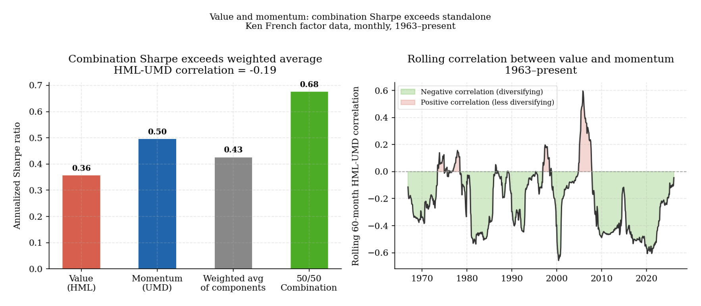

4. Portfolio construction, diversification, and risk
Identifying return sources is necessary but not sufficient. A portfolio built from well-understood return sources can still fail if the positions are sized incorrectly, if the exposures are more correlated than they appear, if concentration accumulates silently through market drift, or if the path of returns is too difficult to hold through. Portfolio construction addresses these problems. It is not a secondary layer added after the investment work is done. It is part of the investment work.
Portfolios are systems of covarying exposures
Markowitz’s foundational insight was that the relevant measure for evaluating any asset is not its expected return and variance in isolation, but its contribution to the distribution of outcomes for the portfolio as a whole (Markowitz, 1952). An asset with high expected return but strong positive covariance with existing holdings may add less value than its standalone characteristics suggest. An asset with modest expected return and low or negative covariance may add considerably more. This is the central reason why portfolio construction cannot be reduced to ranking assets by expected return and allocating proportionally.
The practical implication is that investors who evaluate assets one at a time — forming a thesis at the security level and then adding the position to the portfolio as if it were entering a container — are systematically underestimating concentration risk. A portfolio is not a container. It is a system of covarying exposures whose behavior under stress is frequently different from the sum of its parts evaluated separately.
A concrete example makes this visible. An equity portfolio with forty positions across eight sectors may appear to have substantial breadth. If twenty-five of those forty positions are growth-oriented technology businesses — labeled as software, semiconductors, internet platforms, or tech-enabled industrials — the actual number of distinct exposures is far smaller than the position count suggests. A repricing of long-duration growth assets, as occurred through 2022 when U.S. ten-year real yields rose approximately 250 basis points, can damage the entire portfolio simultaneously regardless of how many ticker symbols it contains. The concentration was in the discount rate sensitivity of the underlying businesses, not in their sector labels.
Measuring genuine diversification requires looking through surface labels to the underlying factor exposures and asking whether those exposures are correlated in the stress states that matter most. Two assets are genuinely diversifying if they provide return through different mechanisms, fail under different conditions, and do not both depend on the same macro conditions persisting. By that standard, the set of genuinely uncorrelated return sources available in most investable universes is considerably smaller than the number of available asset classes.
Correlation is backward-looking and regime-dependent
Correlation is the most widely used input in portfolio construction and also one of the most frequently misused. The limitation is not statistical precision — it is that correlation is backward-looking by construction and regime-dependent in ways that matter most precisely when investors are most reliant on it.
Correlation summarizes co-movement over a chosen historical period. It does not explain why that co-movement occurred, whether the same forces will persist, or how the relationship will behave in environments that differ from the sample. Two assets may appear uncorrelated across a long history because they responded to different shocks during the measurement window, not because their underlying drivers are structurally independent. A new shock that affects both simultaneously — an inflation surge, a liquidity crisis, a sharp rise in discount rates — can tighten correlations rapidly across assets that previously appeared diversifying.
The more fundamental problem is that correlations tend to rise in stress periods — exactly when investors are most dependent on diversification holding. In calm markets, idiosyncratic return drivers, differences in carry, and microstructure noise can keep assets separated. In stress, the dominant driver often becomes broad deleveraging: forced selling, margin calls, redemptions, and the withdrawal of liquidity, which affects nearly all risk assets simultaneously. The chart below demonstrates this empirically. For both equity-bond and equity-credit pairs, the correlation in stress periods is substantially higher than in calm periods.
Relying on unconditional correlation estimates to design a portfolio that must survive stress is therefore making a systematic error: the number being used is most accurate during the periods when it matters least. A portfolio built to survive a scenario in which correlations rise across all risk assets is structurally more honest than one whose diversification claims rest entirely on a decade of favorable covariance.
From capital weights to risk weights
The return source taxonomy from section 3 reveals a construction problem that correlation analysis alone cannot solve: capital allocation and risk allocation are rarely the same thing, and nominal portfolio weights are often poor indicators of where actual uncertainty is concentrated.
A standard 60/40 equity-bond portfolio is the clearest example. In capital terms it appears balanced. In risk terms it is not. The Euler risk contribution decomposition — which attributes each unit of portfolio volatility to its source — shows that equity historically accounts for approximately 85 to 95 percent of total portfolio variance in a standard 60/40 allocation, despite representing only 60 percent of capital. The apparent diversification is largely illusory in risk contribution terms (Hurst et al., n.d.).
The chart below shows this decomposition across three correlation regimes. When the stock-bond correlation is negative, bonds actively reduce total portfolio risk — their Euler contribution is negative, and equity’s contribution mathematically exceeds 100 percent. As correlation moves toward zero and then positive, the diversification benefit disappears and both assets contribute positively to total risk. This is not a theoretical curiosity. It is precisely what happened in 2022 when inflation caused both assets to fall simultaneously.

Risk budgeting responds to this by constructing portfolios around explicit risk allocation targets rather than nominal capital weights. Rather than asking how much capital an asset should receive, it asks how much of the portfolio’s total uncertainty that exposure should account for. This makes concentration visible and forces a clearer conversation about what the portfolio is actually betting on.
Risk parity takes this logic to its natural conclusion. If the goal is to equalize risk contributions across asset classes, and if lower-volatility assets such as government bonds have historically offered adequate risk-adjusted returns, then a portfolio that levers those assets to match equity-like volatility and combines them in a risk-equalized structure should offer better diversification without sacrificing expected return (Asness et al., 2012). This insight is correct — and the strategy demonstrated it empirically through the disinflationary 1985–2020 period. The problem is that the conditions enabling the insight are regime-dependent rather than structural.
The stock-bond correlation chart below shows the full history since 1952. The correlation was positive through the inflationary 1960s and 1970s — equities and bonds fell together under the same inflation shock, and leverage amplified losses in both. The correlation turned persistently negative through the disinflationary 1990s and 2000s, creating the environment in which risk parity worked. In 2022, as inflation returned and central banks tightened aggressively, the correlation turned sharply positive again. The insight that 60/40 is not balanced in risk terms remains correct and durable. The error was treating the diversification conditions that enabled the strategy as permanent features of markets rather than as contingent properties of a specific inflation regime (AQR, n.d.).

Position sizing and the capture of edge
If concentration and correlation are taken seriously, position sizing becomes one of the most consequential decisions in portfolio construction — and one that receives far less analytical attention than asset selection.
Size determines how much of the expected return can actually be captured and how much damage an error can do. A correct thesis expressed at 1 percent of the portfolio produces a negligible contribution to return even if the position doubles. The same thesis expressed at 20 percent produces a material outcome in both directions. Sizing errors are often more consequential than analytical errors, particularly in concentrated portfolios where one or two mistakes can overwhelm the contribution of everything else.
In practice, thoughtful position sizing involves a pragmatic combination: a base framework that reflects conviction and factor contribution, modified by explicit constraints on maximum position size, maximum factor concentration, and minimum liquidity buffer. What distinguishes a well-constructed portfolio from a poorly constructed one is not which framework is used but whether the sizing decisions are made explicitly — with awareness of how wrong they could be — rather than implicitly as a residual of the selection process.
The table below makes the practical stakes concrete. The same investment thesis, with identical analytical characteristics, produces radically different portfolio-level consequences depending on the size assigned to it. At 2 percent of portfolio it is a contributing position. At 15 percent it is a portfolio event. The analysis that determines whether the thesis is correct is the same. What changes is entirely the sizing decision.

Rebalancing as structural risk control
A portfolio left to market drift will gradually become a different portfolio from the one that was constructed. Positions that have appreciated become larger, positions that have declined become smaller, and the factor exposures of the original design shift in ways that often increase rather than reduce concentration.
Rebalancing is the mechanism by which the intended portfolio structure is maintained against this drift. Its primary role is risk control: ensuring that the portfolio continues to express the intended exposures in the intended proportions rather than allowing market drift to silently concentrate risk in recent winners.

For systematic strategies, the rebalancing question is particularly acute because the signal driving each position has a finite half-life. A momentum signal degrades over time as the information it reflects becomes stale. Rebalancing at a frequency that is too low relative to signal decay means the portfolio holds positions whose original rationale has already weakened. Rebalancing too frequently relative to signal persistence incurs unnecessary turnover costs that erode the premium being harvested. The optimal frequency is a function of the strategy’s specific signal economics, not a fixed calendar choice.
Combining signals: the portfolio is stronger than its parts
When multiple signals or strategies are combined, the combination itself becomes a portfolio problem, and the same questions about covariance and concentration apply at the strategy level.
Many factors that appear modest on a standalone basis become substantially more attractive when combined with other factors that are lowly correlated with them. The chart below shows this using the Fama-French value and momentum factors. Both HML and UMD have produced positive standalone Sharpe ratios over the full sample. But the 50/50 combination produces a Sharpe ratio that exceeds the weighted average of the two components — because the two factors are negatively correlated with each other. Momentum tends to perform worst precisely when value performs best, and vice versa.

A signal that is only marginally attractive on a standalone basis may still deserve capital if its correlation to existing signals is low. A signal that looks impressive in isolation may deserve a smaller allocation if it introduces concentrated exposure to a risk the rest of the portfolio already carries. The incremental contribution to the overall portfolio matters more than standalone performance (Asness et al., 2013).
Path risk: the portfolio that cannot be held
The most practically important concept in portfolio construction is path risk — the risk not that the portfolio produces a poor terminal outcome, but that the experience of holding it through an adverse period forces an exit before the terminal outcome is realized.
Portfolios are lived through continuously. Investors face interim mark-to-market losses, client redemptions, committee pressure, and the difficulty of maintaining positions through extended drawdowns. A portfolio that is theoretically optimal over a ten-year horizon but produces a 40 percent drawdown in the third year may fail in practice — not because the thesis was wrong but because the drawdown exceeded the practical tolerance for loss.
Volatility measures the dispersion of outcomes around an average. Drawdown measures the lived experience of loss — the peak-to-trough decline and the duration for which capital is below its previous high. For most investors, drawdown is the more practically relevant risk. A portfolio with moderate volatility but a long, grinding underwater period can be extremely difficult to hold, particularly when the recovery requires continuing to own positions that have already been painful (Ilmanen et al., 2018).
The chart below illustrates this using two simulated portfolios with similar annualized Sharpe ratios. Portfolio A experiences a sharp but short crisis. Portfolio B experiences a long shallow drawdown over several years. From a summary statistics perspective both look similar. From a practical holding perspective they are very different: Portfolio B tests patience for a period long enough to trigger reviews and structural changes. The probability of abandonment before recovery is materially higher for Portfolio B despite identical long-run statistics.

Drawdown budgeting should therefore be as explicit as return targeting. A portfolio designed with a stated tolerance for a 15 percent maximum drawdown should be tested against whether its actual drawdown experience across stressed scenarios is consistent with that tolerance before capital is committed.
The construction principles in this section — understanding covarying exposures, recognizing that correlation rises in stress, building around risk weights rather than capital weights, sizing explicitly, maintaining structure through rebalancing, and combining signals for their portfolio contribution — provide the practical foundation for translating the return sources from section 3 into a portfolio that can be held through the conditions it will encounter. What that portfolio should be expected to earn from its current starting point is the subject of section 5. How to organize it around a core — and when active additions justify their place alongside that core — is the subject of section 6.
References
AQR. (n.d.). Can risk parity outperform if yields rise? Retrieved https://www.aqr.com/-/media/AQR/Documents/Insights/White-Papers/AQR-Can-Risk-Parity-Outperform-If-Yields-Rise.pdf
Asness, C. S., Frazzini, A., & Pedersen, L. H. (2012). Leverage aversion and risk parity. Financial Analysts Journal, 68(1), 47–59. https://www.aqr.com/-/media/AQR/Documents/Insights/Journal-Article/Leverage-Aversion-and-Risk-Parity.pdf
Asness, C. S., Moskowitz, T. J., & Pedersen, L. H. (2013). Value and momentum everywhere. The Journal of Finance, 68(3), 929–985. https://www.aqr.com/-/media/AQR/Documents/Insights/Journal-Article/Value-and-Momentum-Everywhere.pdf
Hurst, B., Ooi, Y. H., & Pedersen, L. H. (n.d.). Understanding risk parity. AQR White Paper. Retrieved https://www.aqr.com/-/media/AQR/Documents/Insights/White-Papers/Understanding-Risk-Parity.pdf
Ilmanen, A., Israel, R., Moskowitz, T. J., Thapar, A., & Heuvel, O. van den. (2018). Diversification during a century of drawdowns. AQR Alternative Thinking. https://www.aqr.com/-/media/AQR/Documents/Alternative-Thinking/AQR-Alternative-Thinking-3Q18---Diversification-During-a-Century-of-Drawdowns.pdf
Markowitz, H. (1952). Portfolio selection. The Journal of Finance, 7(1), 77–91. https://www.jstor.org/stable/pdf/2975974.pdf